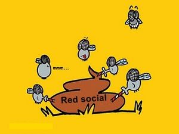

Red social
 De: La Frikipedia, la enciclopedia extremadamente seria.
De: La Frikipedia, la enciclopedia extremadamente seria.
 Típica red social de hoy en día
«¿Red social? en mis tiempos jugábamos con piedras»
~ Tú madre al decirle que entre a facebook
«¡Esa red no es para pescar!»
~ IP anónima explicándole a su padre de que trata Facebook.
«Las redes sociales contienen las 3 "B's": Bonitas, baratas y adictivas»
~ Albert Einstein sobre las redes sociales
Red social dicese de aquel sitio de internet en el cual pierdes más tiempo que en toda tú vida, solo agregando y viendo personas desconocidas a las cuales después de unos días les dirás amigos, estas páginas web suelen venir tamaño caguama(muy grande) ya que se utiliza para interconectar personas que no se conocen y hagan una bonita amistad basada en el acoso entre personas que dicen que tienen una vida social activa pero que claro... es mentira y se la viven pegados al monitor en lugar de ir con amigos.
Origen
Así siempre comienzan las redes sociales.
Las redes sociales se han creado después de la Internet ya que no se podían crear antes porque claramente no había Internet (D'oh) y en la actualidad son las páginas más visitadas de todo el mundo internetero y también son las páginas con números inimaginables de acosadores virtuales así también son las páginas con más gilipollas y sujetos de la tribu urbana HOYGAN, además de ser sitios para hacer amigos virtuales de los cuales no sabes nada y hasta dices que son tus amigos... aunque no lo son. Estos sitios suelen ser creados por gringos que no tienen amigos y claramente buscan a sus amigos por la red para hacerse magnates hombres de negocios ganando dinero a cuestas de otras personas.
¿Origen?
Ya que solo los que hacen las redes sociales saben las historias de estas, ya que son los que van haciendo la historia, es decir, los usuarios solo se meten a estas redes y no se salen hasta que la madre de este le corta el cable del Internet, pero ante de eso se hizo unaprestigiada encuesta en una prestigiada página y esto fue lo que dijeron algunos usuarios cuando se les pregunto¿Cuando se originaron las redes sociales?.
- Origen según los fresas: "Osea kuando io me rejistre we, aii fue kuando ce orijinaron las redes zociales".(Este mensaje puede contener idiomas no conocidos por gente normal)
- Origen según los nacos: "Ira puez laz reEdez Sosiales se isieron kuando las iso alyen"(Este mensaje también).
- Origen según los gilipollas: "de ke ablan?" (¡Este también!).
- Origen según los Geeks: "Las redes sociales en 1954, wikipedia lo dice" (Este mensaje
no también).
Aunque esto es lo que dicen las tribus urbanas que son las que generalmente se la viven en las redes sociales 28 horas al día, están en unherror
Top 10 de redes sociales
- Cadena alimenticia de redes sociales
si lees esto eres cani 2: Facebook
- 10: Orkut - Es una red social creada, distribuida, promocionada y cocinada por un google ,es decir, un trabajador maltratado de google la ha creado con
nada un poco de éxito en latino america, entre otras partes del mundo menos en Europa ni Asía... ni África ni Oceanía... pero en los continentes que quedan es más que exitosa.
- 9: Badoo - Esta red social creada por ingleses de Londres... especialmente creada para buscar pareja y para otros menos salidillos que también buscan amigos, esta web esta en el ranking de los 10,00o sitios webs más visitados.
- 8: Metroflog - También llamada "Sesión de fotos para playboy", esta red social que más bien no se dedica a socializar si no a añadir fotos a un perfil, fue derrocada del título al salir facebook... ahora solo la visitan salidillos de vez en cuando.
- 7: Menéame - Esta red social es un sitio comunitario que no tiene mucho futuro (o tal vez si), es muy conocido en españa, pero no es conocido en África... vez como no puede tener futuro.
- 6: MySpace - Esta red social es una de la más viejas que hay y tiene al menos 5,000,000 de usuarios ya que Facebook le ha quitado más del 80%, esta web es más bien utilizada por músicos ya que tienen el "MySpace música" y aparte del MySpace música los demás son purosemos.
- 5: Hi5 Es la misma mierda nomás que ahora volteada es lo mismo que facebook, myspace y todas las demás redes sociales, solo que al igual que todas esta también tiene en común que facebook le ha robado la mayoria de sus usuarios.
- 4: Yahoo! Respuestas Esta red social es trascendental ya que es muy diferente a las demás ya que en esta se dedican a hacer pregunta que generalmente son estúpidas y superficiales.
- 3: Twitter Esta red social es bien usada por famosos y famosas, hasta se dice que es de las más revolucionarioas hasta el momento y hasta ahora no logra serlo con este microbloggin que no puedes anotar ni una mierda con 140 caracteres.
- 2: Facebook La red social que esta al tope de la cadena alimenticia, con el tan afamado "Me gusta" y sus frases gilipollas, con esto facebook a conquistado el corazón, los dedos y las miradas de los usuarios.
- 1: Youtube Esta web, más que nada es para subir videos y que otros los comenten... aún así es una de las redes más grandes y estupidamente se ha aliado a google... pobre.
Red social de frikipedia: Frikibook
Claro, alguien ha dicho que frikipedia siempre se queda atrás pero NO, frikipedia nunca se queda atrás ya que no se ha habilitado una red social autentica llamada Frikibook para hacer gilipollecez como en las redes sociales anteriormente nombradas esto solo es una ocurrencia que a un viciao de estos sitios web se les ha ocurrido pero aún así... mola.
| Estado | Afoto | [[]] Enlaces | · Vídeo |
|
>>A Juan Ejemplo le gusta La Frikipedia
Me gusta · Comentar · Tits · Compartir
|
|
|
A Nombreusuario y Anónimo les gusta esto
_____________________________________
Ofensivo.jpg
AAAAAAHHHHHHHHH!
|
|
Ver también
 Informática Informática
|
Personajes Infames Famosos
Dispositivos de Almacenamiento
|
Autor(es):
- Gñapero Solitario
- Genericool
Frikipedia 2005-2016, Licencia
GFDL 1.2 - Extraído por FrikiLeaks